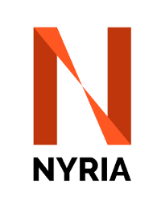

About us
In 2014 the University of Heidelberg and the Max Planck Institute for Astronomy (MPIA) together with the Santander Bank organised a summer school, "Reaching the limits of the sky, astronomical instrumentation in the 21st Century".
This summer school addressed recent developments in adaptive optics and interferometry with an emphasis on VLTI and E-ELT instrumentation. Over the course of two weeks, eighteen students from Europe and Latin America gathered in Santiago, Chile, to learn from experts, socialise and learn about other areas of instrumentation from each other. In addition they were given a guided tour of the ESO facilities at Paranal observatory.

Attendees and organisers of the 2014 Summer School, "Reaching the limits of the sky, astronomical instrumentation in the 21st Century".
In 2015, half of the students met in Heidelberg to give talks, socialise and visit the facilities at MPIA and the Landessternewarte, Heidelberg, Germany. Following this first unofficial meeting, the idea grew to start a yearly gathering for instrumentation graduates and early postgraduates to network, visit institutes involved in instrumentation for astrophysics and learn about other fields within astronomical instrumentation.
We therefore built NYRIA for Network of Young Researchers in Instrumentation for Astrophysics. This network focuses on ground-based instrumentation in the visible-infrared domain.
The next generation of telescopes and instruments will be built by large international consortia. Therefore, it is essential that the next generation of astronomical instrumentalists get to know each other in preparation for working in these groups. To this end we aim to make these meetings annual and hope that the network of early career researchers grow and strengthen. This will allow us to update our research and findings, exchange ideas and discuss recent developments in everyone’s field. The topics will span from hardware and software, to topics as diverse as wavefront sensing, coronagraphy, spectroscopy, fiber optics, and post-processing techniques to reach the limit of current and future instruments.